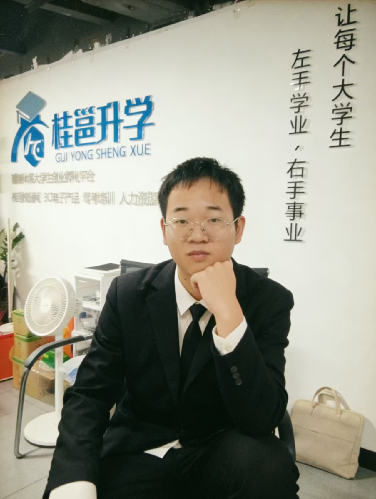
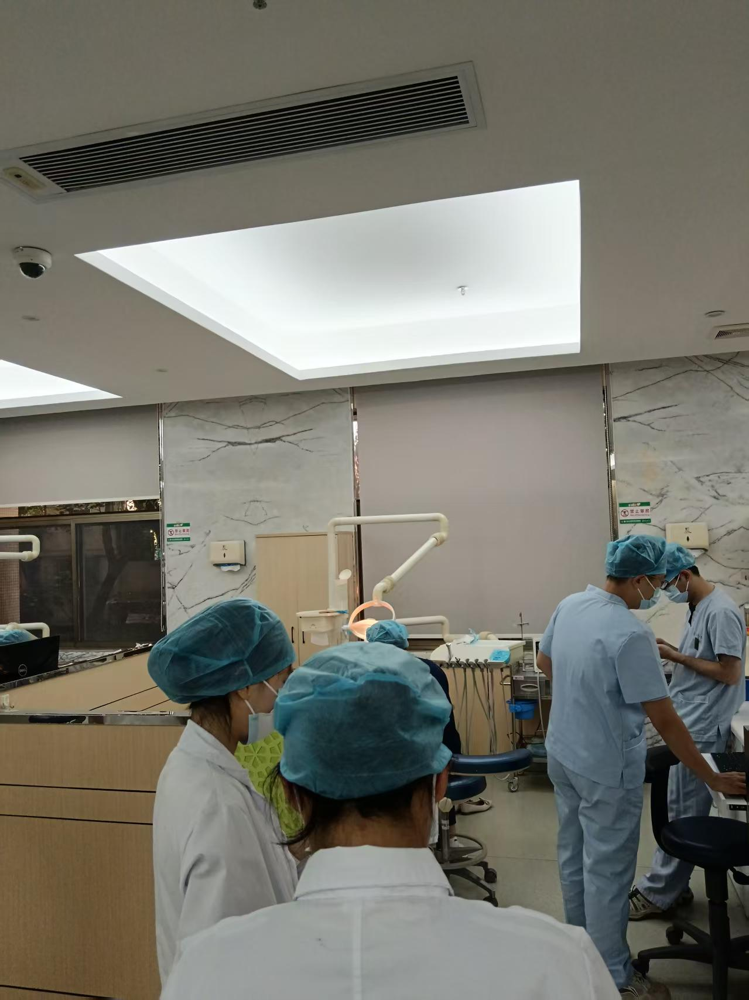
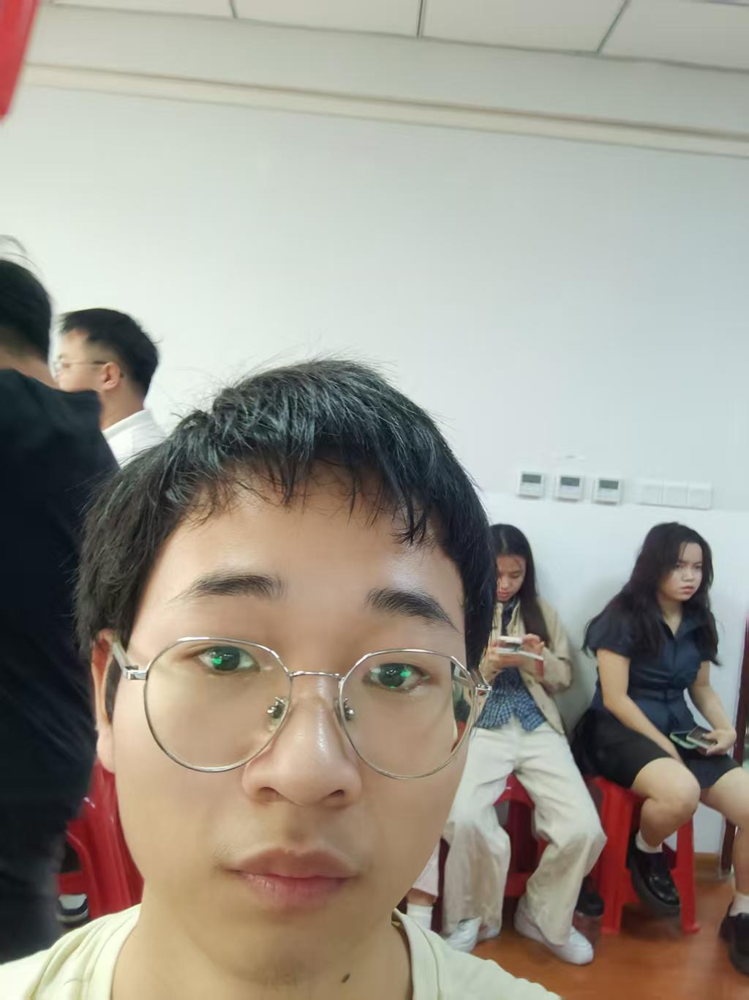
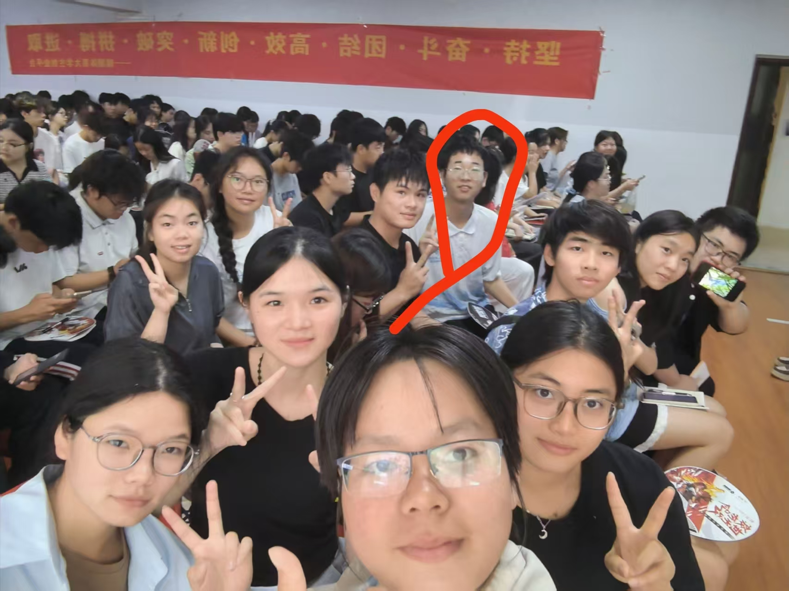
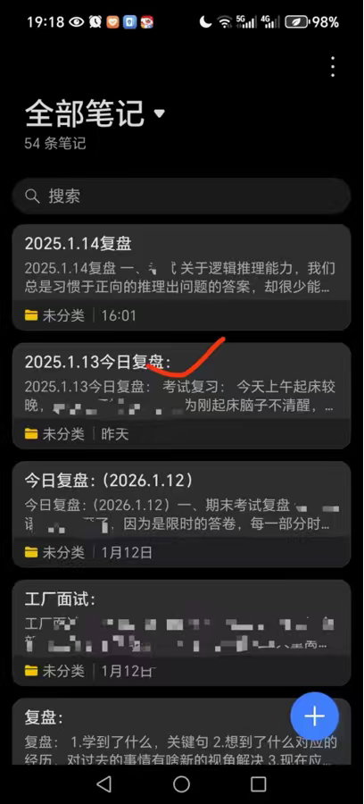
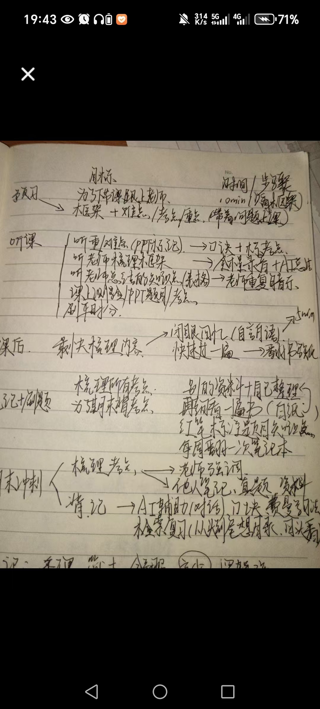
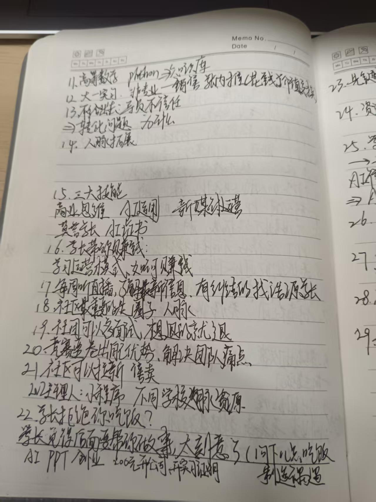
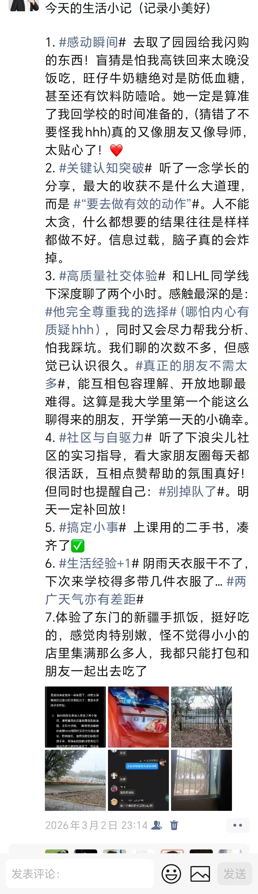

学业成绩
大一专业学业成绩
汕头大学医学院出具的成绩证明。大一课业不轻，能稳住前 25%，靠的不是熬夜，是每天把该做的事做完。
我把自己定位为比大家多走半步的「探路者」。与其甩出一堆光鲜的履历，不如看看下面这些事里，有没有你能用得上的资源。
熬过了大一繁重的课业。如果你对医学基础课感到头大，或者想知道怎么在化学实验里少炸几个烧杯，随时拉我交流。
大一就跑去招聘会和 HR 斗智斗勇，现在兼任数码公司区域主管。想搞点数码副业、了解商业运营，我们可以一起头脑风暴。
从选课避坑、汕大青年怎么运作，到汕头哪家店最好吃、周末去哪放风——我的探店雷达和一百多万步公益步数不是白走的。
医学基础课、实验课、科室见习。想在化学实验里少炸几个烧杯，先来看看我踩过的坑。
汕头大学医学院出具的成绩证明。大一课业不轻，能稳住前 25%，靠的不是熬夜，是每天把该做的事做完。

换上正装去听一场交流会。第一次近距离感受「做研究的人」是怎么提问、怎么表达的，也顺便练了怎么和外籍教授、业界前辈自如沟通。

从称量、配液到观察反应，每一步都讲究规范。想少炸几个烧杯，秘诀只有一条：手套戴好，步骤读三遍再动手。
穿上白大褂进科室观摩，才真正理解课本上那些名词背后，是具体的人和具体的事。
课后追着老师问问题，是这一年最有收获的习惯之一。问得越具体，得到的答案越有用。
我是个爱泡图书馆的医学生。自习是大学里最不需要天赋的一件事：坐下来，把书翻开，剩下的交给时间。
从理论框架到落地执行的封闭式高压训练。职场不看你「听过」多少，只看你能不能把策略变成拿到结果的实战能力。
大一就跑去招聘会和 HR 斗智斗勇，现在兼任数码公司区域主管。头衔只是结果，能不能把事做成才是核心。
2025 年获聘为江南区主管，负责区域业务对接与团队协作。想了解商业运营或在大学搞点数码副业，可以一起头脑风暴。
走进招聘会，坐在咨询处对面，第一次以「求职者」身份和企业聊专业、聊未来，提前感知真实社会的用人需求。

汕头大学医学院第三十七次学生代表大会。想搞清楚汕大青年是怎么运作的，从一份会议文件读到现场议程，是最快的方式。
作为汕大青年新媒体部门的一员，参与策划和制作过许多面向全校的推文。如果学弟学妹们对校园官方媒体的运作感兴趣，或者想私下交流排版、文案、摄影技巧，非常欢迎来找我“取经”。
把时间花在别人身上，也是一种收获。一百多万步的公益步数，是走出来的。
每天多走一段路，步数就能换成公益金。累计一百多万步，习惯一旦跑起来，就不太想停。
单日 24,927 步 · 持续参与中
穿上反光背心站在路口的那几个小时，比想象中更考验耐心，也更能看清一所学校是怎么运转的。
医学课业好重，但世界那么大，我还是想去看看。唱歌、买菜做饭、坐高铁到处跑，顺便在龙眼南路疯狂打卡。

军训是大学的第一课。站军姿的时候觉得难熬，回头看却是一段很干净的集体记忆。
院系篮球赛的场边。运动是最直接的解压方式，也是最容易约到的社交。
自己买菜、洗切、下锅。会做饭之后，日子过得踏实很多，也更知道钱和时间花在哪。




我习惯每天复盘思考：接纳自己的短板，向外开放，向内专注。做成了什么、卡在哪里、明天怎么改——累计 281 条，还在继续。
在汕头读书，就把这座城市认真走一遍。龙眼南路是第一站，想知道本地哪家店最好吃、周末去哪放风，问我就行。
一个人坐高铁去陌生的城市，是我给自己安排的成年礼。出发前做攻略，路上处理意外，回来写复盘——一趟行程能练到的东西，比想象中多。
把大一这一年按时间摊开看，脉络会清楚很多。